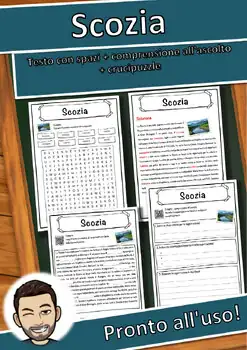
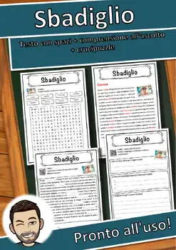
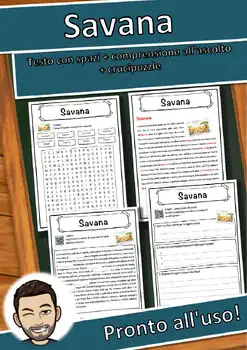
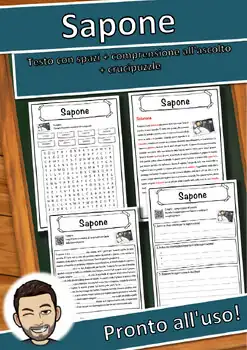
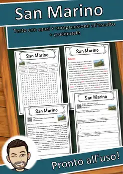
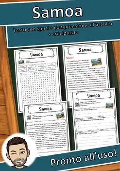
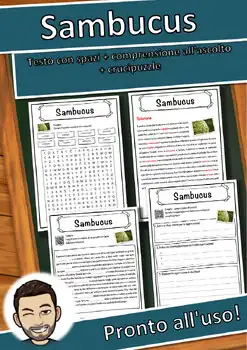
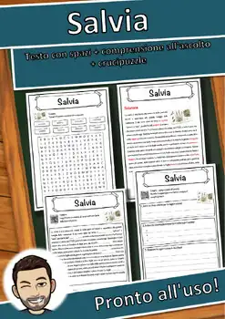

Reading Comprehension Worksheets – 9th Grade
1530 Reading Comprehension Worksheets resources for 9th Grade, ready to print: Sessualità, Servizio, Serpentes, Serbia and more. Each resource page shows the grade range, page count and a preview and links straight to the product on TpT.
1,530 resources

Sessualità – Italian Reading Comprehension Worksheet (Scheda): Cloze & Listening

Servizio – Italian Reading Comprehension Worksheet (Scheda): Cloze & Listening

Serpentes – Italian Reading Comprehension Worksheet (Scheda): Cloze & Listening

Serbia – Italian Reading Comprehension Worksheet (Scheda): Cloze & Listening

Senzatetto – Italian Reading Comprehension Worksheet (Scheda): Cloze & Listening

Senegal – Italian Reading Comprehension Worksheet (Scheda): Cloze & Listening

Semaforo – Italian Reading Comprehension Worksheet (Scheda): Cloze & Listening

Selenio – Italian Reading Comprehension Worksheet (Scheda): Cloze & Listening

Selce – Italian Reading Comprehension Worksheet (Scheda): Cloze & Listening

Sediment – Italian Reading Comprehension Worksheet (Scheda): Cloze & Listening

Secondo – Italian Reading Comprehension Worksheet (Scheda): Cloze & Listening

Secolo – Italian Reading Comprehension Worksheet (Scheda): Cloze & Listening

Seaborgio – Italian Reading Comprehension Worksheet (Scheda): Cloze & Listening

Scrittore – Italian Reading Comprehension Worksheet (Scheda): Cloze & Listening

Scozia – Italian Reading Comprehension Worksheet (Scheda): Cloze & Listening
Sciroppo – Italian Reading Comprehension Worksheet (Scheda): Cloze & Listening
Sciopero – Italian Reading Comprehension Worksheet (Scheda): Cloze & Listening

Scienza – Italian Reading Comprehension Worksheet (Scheda): Cloze & Listening
Sci – Italian Reading Comprehension Worksheet (Scheda): Cloze & Listening

Schultüte – Italian Reading Comprehension Worksheet (Scheda): Cloze & Listening

Schlager – Italian Reading Comprehension Worksheet (Scheda): Cloze & Listening
Schiena – Italian Reading Comprehension Worksheet (Scheda): Cloze & Listening
Schiavismo – Italian Reading Comprehension Worksheet (Scheda): Cloze & Listening

Schach – Italian Reading Comprehension Worksheet (Scheda): Cloze & Listening

Scandio – Italian Reading Comprehension Worksheet (Scheda): Cloze & Listening

Sbadiglio – Italian Reading Comprehension Worksheet (Scheda): Cloze & Listening

Savana – Italian Reading Comprehension Worksheet (Scheda): Cloze & Listening

Sauna – Italian Reading Comprehension Worksheet (Scheda): Cloze & Listening

Saturn – Italian Reading Comprehension Worksheet (Scheda): Cloze & Listening

Sassofono – Italian Reading Comprehension Worksheet (Scheda): Cloze & Listening
Sardegna – Italian Reading Comprehension Worksheet (Scheda): Cloze & Listening

Sapone – Italian Reading Comprehension Worksheet (Scheda): Cloze & Listening
Santo – Italian Reading Comprehension Worksheet (Scheda): Cloze & Listening
Sangue – Italian Reading Comprehension Worksheet (Scheda): Cloze & Listening

San Marino – Italian Reading Comprehension Worksheet (Scheda): Cloze & Listening

Samurai – Italian Reading Comprehension Worksheet (Scheda): Cloze & Listening

Samoa – Italian Reading Comprehension Worksheet (Scheda): Cloze & Listening

Sambucus – Italian Reading Comprehension Worksheet (Scheda): Cloze & Listening

Samario – Italian Reading Comprehension Worksheet (Scheda): Cloze & Listening

Salvia – Italian Reading Comprehension Worksheet (Scheda): Cloze & Listening

Salute – Italian Reading Comprehension Worksheet (Scheda): Cloze & Listening

Salmone – Italian Reading Comprehension Worksheet (Scheda): Cloze & Listening

Salisburgo – Italian Reading Comprehension Worksheet (Scheda): Cloze & Listening

Sahel – Italian Reading Comprehension Worksheet (Scheda): Cloze & Listening

Safari – Italian Reading Comprehension Worksheet (Scheda): Cloze & Listening

Sacerdote – Italian Reading Comprehension Worksheet (Scheda): Cloze & Listening

Sabbia – Italian Reading Comprehension Worksheet (Scheda): Cloze & Listening

Rübezahl – Italian Reading Comprehension Worksheet (Scheda): Cloze & Listening
No resources found – try a different search term or filter.